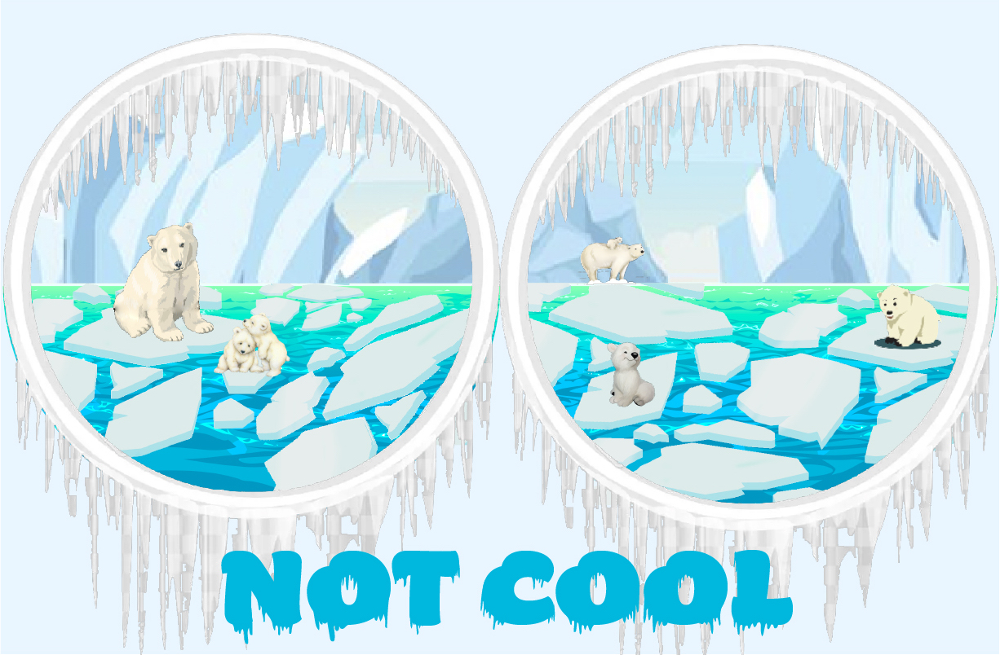

In collaboration with Justin Seplowe, Ashwittha Ganesan, and Kay Weekes
Key Words: Augmented reality · AR development for android · AR image detection · Unity development

In this project, I was able to learn the foundations of AR development for android, how to use AR image detection, and how to utilize both 2d and 3d aspects within the experience. My team was assigned with finding many of the assets while I focused on bringing it all together through the Unity development. This project gave me a good foundation on the basics of using AR in Unity.
The goal of our project is to bring awareness to the endangerment of polar bears. Polar bears play an integral role in keeping the ecosystem balanced. Global warming has led to the melting of arctic ice which polar bears rely on to survive and hunt for seals. We utilized augmented reality as an immersive art form to show the larger picture. While the viewers have likely heard about climate change and its impact, they have likely not been able to be immersed and truly understand the harsh realities that polar bears face due to climate change.